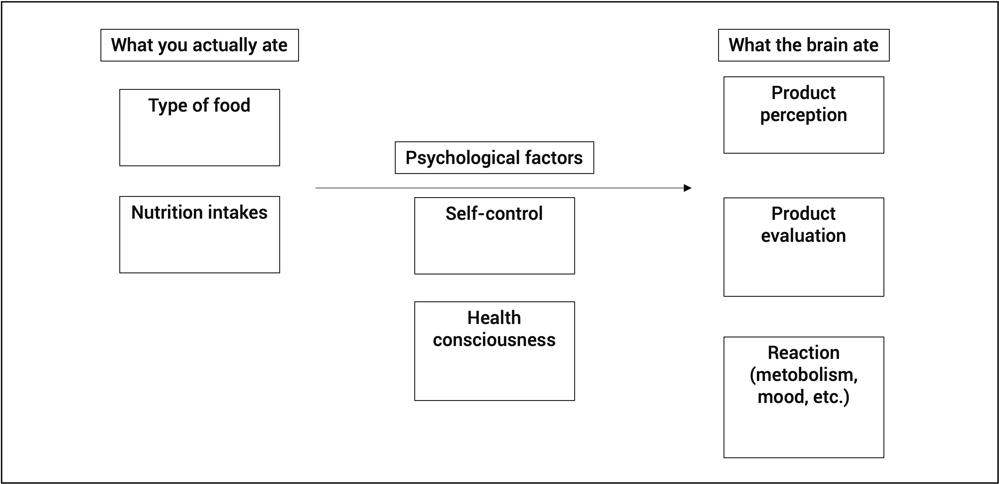

Flavor Mechanisms and Perceptions: A Review
Flavor is essentially in the brain, but we often overlook this. How exactly do we 'taste' things and decide what to eat?

Flavor is essentially in the brain, but we often overlook this. How exactly do we 'taste' things and decide what to eat?
Flavors are essentially combined from the human central nervous system. Different sensory modalities are first perceived then are intertwined to produce what is called the flavor. Visual, auditory, olfactory, gustatory and somatosensory modalities determine what is the flavor and all are interweaved more intensely than one might think.
We tend to eat "what we normally eat". The world is full of standardized food choices, and some people have difficult time choosing an unfamiliar food over what they always eat. Food familiarity has shown to be directly related to food preference; people making the same and standardized food choices could be the reason why we are not yet used to the diverse food choices and advanced food industries' products.
A review and a psychological background to multisensory integration
Review,
mechanism analysis
Multisensory technology has focused on amplifying hedonic properties of an object, create immersive enviornment for virtual scenarios, or simply to replicate the human senses with technology. However, little light has been shed to the actual perceptions of the people toward multisensory technology. My aim is to first analyze what is the basics to how we choose foods, and what are the sensory mechanisms to consider when designing multisenosry experiences.

Different parts of the brain, functioning according to the sensory information retrieved, produce sensory perceptions. However, when the sensory modalities are analyzed indepedently, they are only an anlysis, but when 'felt' unanimously, it is a synthesized flavor.
| PHYSICAL STIMULI |
|---|
| Appetite Emotions, Preference, Hunger |
| Food sensations Olfactory, Visual, Auditory |
| Eating action Salivating, Chewing |
| PHYSIOLOGY |
|---|
| Sensory Activation Hearing, Odor, Tactile |
| Mastication Retronasal Odor, Tasting Mechanisms (TRP channels are expressed in taste buds, nerve fibers, transducing chemical stimuli, giving rise to sensations of taste, irritation, warmth, coolness, and pungency |
| Swallowing Complete Flavor |
| PERCEPTION |
|---|
| Somatosensation Tactile, Thermal, Irritation |
| All Sensory, Contextual Reflection Taste receptors are located in discrete regions of the mouth but we perceive taste as arising from throughout the oral cavity. |
| Reference Built |
Through our past experiences from our ancestors, accumulated experience showed that sweet and fatty meant energy, hence a natural predilection from toddlers to prefer such tastes, while avoid the others which were indicators of poison or toxicity. Taste fiber carries particular taste quality. A theory in 1931 from Arthur Fox said that the phenylthiocarbamide (PTC) tastes can vary among people, meaning, everyone might have different inclination to tastes since birth. Propylthiouracil(PROP) is another substance being used to describe those who can taste them, people who feel more intense tastes, and those cannot. Some can be more sensitive toward the tastes, while some are not - leading to specific eating behaviors, tendencies, nutritional status and balance.
One way to explicate how a user might choose a food is due to their past experiences and stimulations, also closely related to physicological reactions, but more based on their experiences. This could be the unconscious health-consciousness, social perceptions, product evaluations, or the simply mood of the day. It is vital to address how distinct factors are intertwined before the conduction of food-related programs and experiments; as most rely on what they normally eat, choose the familiar foods, than to venture out. Following is the food choice mechanism theory I have constructed:
